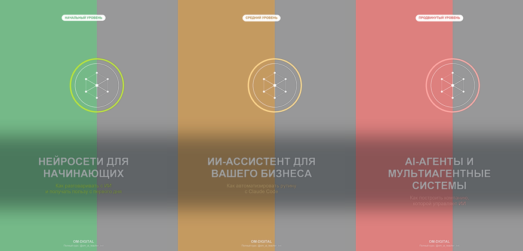

Превью v2: море ЯВНО видно по всей карточке (не только в узкой полоске) — прозрачность теперь зависит от яркости пикселя: заливка панелей/фона прозрачнее, текст/значок/бейдж остаются чёткими

AI Studio
Книги OM-Digital
Бесплатные книги о работе с Claude и AI-агентами, включая разбор кейса Карманного Доктора
Теперь прозрачность каждого пикселя картинки зависит от его яркости: сплошная заливка панелей и фона стала заметно прозрачнее — сквозь неё ярко проступает синее море с переливами и волнами; текст, бейдж и значок остались почти непрозрачными — чёткими и контрастными. Дополнительно под текстом названий — тёмная подложка для гарантии читаемости.